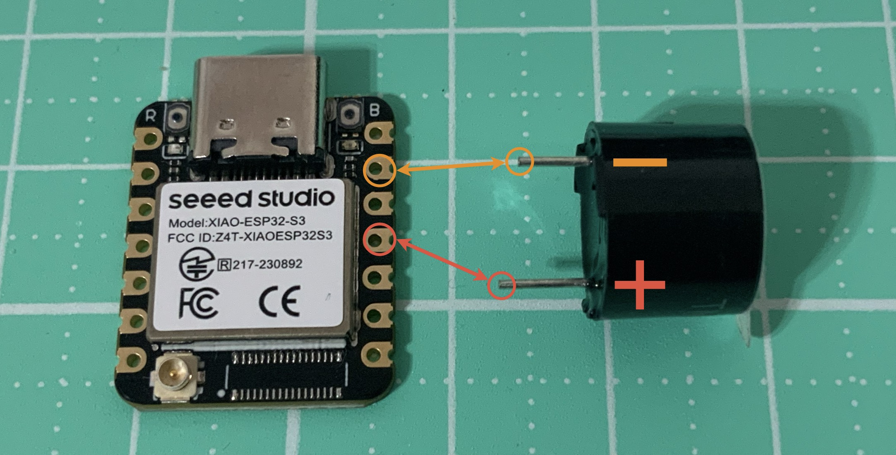
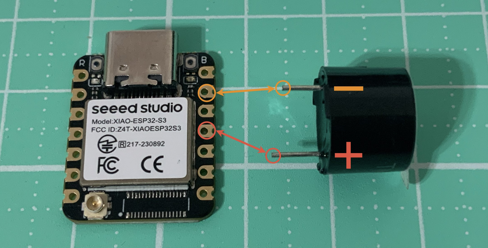
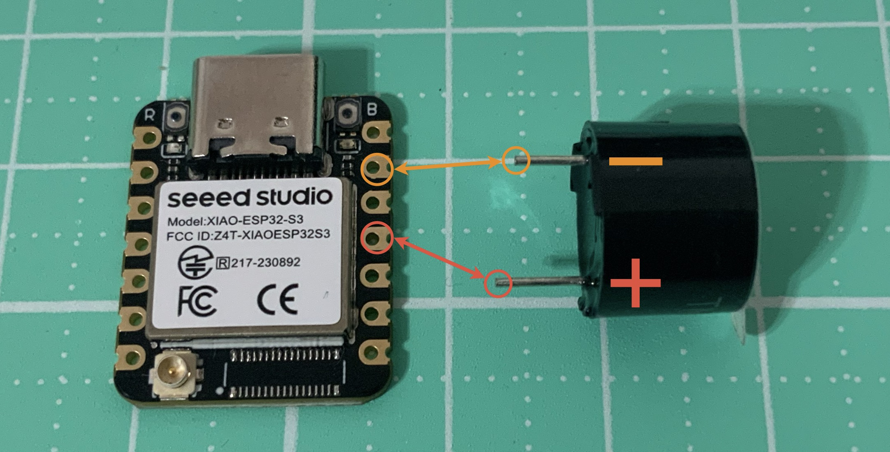

🔌 接線方式
- 蜂鳴器「＋」 → GPIO 9
- 蜂鳴器「－」 → GND
 

📌 有源蜂鳴器與無源蜂鳴器不同，
只要 HIGH / LOW 控制即可發聲。
只要 HIGH / LOW 控制即可發聲。
Seeed XIAO ESP32-S3 × MicroPython
有源蜂鳴器（Active Buzzer）內部已內建震盪電路， 只要給予 高電位 即可發出聲音， 不需要 PWM 或指定頻率，適合初學者使用。

from machine import Pin
import time
# ========= 有源蜂鳴器設定 =========
# 蜂鳴器正極接 GPIO 9，負極接 GND
buzzer = Pin(9, Pin.OUT)
# 重複鳴叫 10 次
for i in range(10):
buzzer.value(1) # 開啟蜂鳴器（發聲）
time.sleep(0.2) # 發聲 0.2 秒
buzzer.value(0) # 關閉蜂鳴器
time.sleep(0.2) # 停止 0.2 秒
蜂鳴器會以「嗶－嗶－」的方式響 10 次， 每次發聲 0.2 秒、停止 0.2 秒。